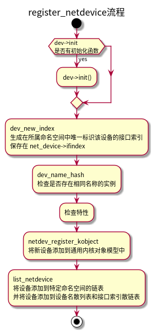
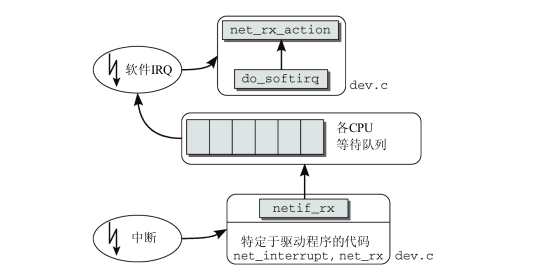
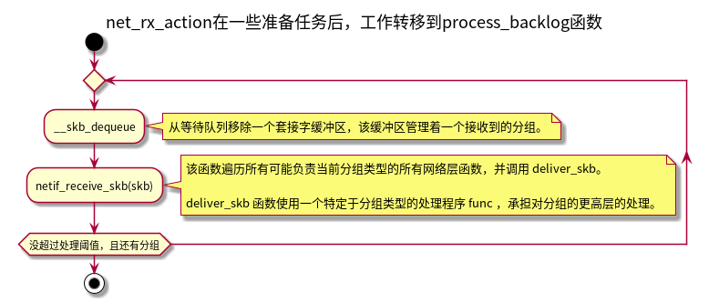
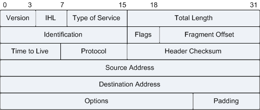
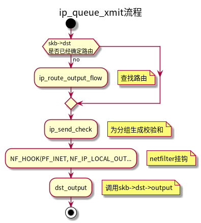
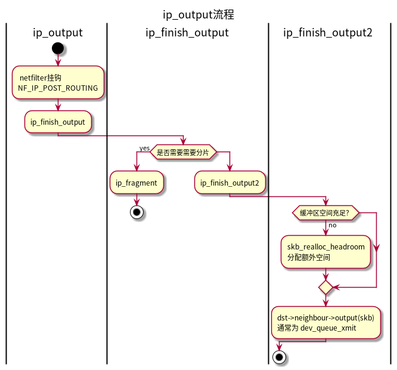

Linux网络概览
1 概览
- 内核中的网络分层
- 套接字缓冲区和网络分组数据之间的关联

- 操作套接字缓冲区的标准函数
| 函数 | 语义 |
|---|---|
| alloc_skb | 分配一个新的 sk_buff 实例 |
| skb_copy | 创建套接字缓冲区和相关数据的一个副本 |
| skb_clone | 创建套接字缓冲区的一个副本，但原本和副本将使用同一分组数据 |
| skb_tailroom | 返回数据末端空闲空间的长度 |
| skb_headroom | 返回数据起始处空闲空间的长度 |
| skb_realloc_headroom | 在数据起始处创建更多的空闲空间。现存数据不变 |
/* 从给定的套接字缓冲区获取传输层首部的地址。*/ unsigned char *skb_transport_header(const struct sk_buff *skb); /* 将传输层首部重置为数据部分的起始位置 */ static inline void skb_reset_transport_header(struct sk_buff *skb) /* 根据数据部分中给定的偏移量来设置传输层首部的起始地址。 */ static inline void skb_set_transport_header(struct sk_buff *skb, const int offset) /* MAC层 */ unsigned char *skb_mac_header(const struct sk_buff *skb); static inline void skb_reset_mac_header(struct sk_buff *skb) static inline void skb_set_mac_header(struct sk_buff *skb, const int offset) /* 网络层 */ unsigned char *skb_network_header(const struct sk_buff *skb); static inline void skb_reset_network_header(struct sk_buff *skb) static inline void skb_set_network_header(struct sk_buff *skb, const int offset)
套接字缓冲区等待队列使用 struct sk_buff_head 结构来描述：
struct sk_buff_head { /* next 和 prev 用于创建循环链表*/ struct sk_buff *next; struct sk_buff *prev; /* 指定等待队列的长度，即队列中成员的数目。*/ __u32 qlen; spinlock_t lock; };
2 网络访问层
2.1 网络设备
内核中，使用 struct net_device 表示网络设备，在分配该结构并填充对应结构后，通过 register_netdev 函数注册到内核。
register_netdev 函数该函数完成一些初始化任务，并将该设备注册到通用设备机制内。这会创建一个sysfs项 /sys/class/net/<device> ，关联到该设备对应的目录。
$ ls -l /sys/class/net/ total 0 lrwxrwxrwx 1 root root 0 Dec 11 10:26 enp1s0 -> ../../devices/pci0000:00/0000:00:1c.0/0000:01:00.0/net/enp1s0 lrwxrwxrwx 1 root root 0 Dec 11 10:26 lo -> ../../devices/virtual/net/lo lrwxrwxrwx 1 root root 0 Dec 11 10:26 virbr0 -> ../../devices/virtual/net/virbr0 lrwxrwxrwx 1 root root 0 Dec 11 10:26 virbr1 -> ../../devices/virtual/net/virbr1 lrwxrwxrwx 1 root root 0 Dec 11 10:26 virbr2 -> ../../devices/virtual/net/virbr2 lrwxrwxrwx 1 root root 0 Dec 12 10:33 wlx488ad25147fe -> ../../devices/pci0000:00/0000:00:14.0/usb1/1-1/1-1:1.0/net/wlx488ad25147fe
2.1.1 数据结构
内核中，每个网络命名空间的网络设备都会遵循下列机制：
- 所有的网络设备都保存在一个单链表中，表头为 dev_base 。
- 按设备名散列。辅助函数 dev_get_by_name(struct net *net, const char *name) 根据设备名在该散列表上查找网络设备。
- 按接口索引散列。辅助函数 dev_get_by_index(struct net *net, int ifindex) 根据给定的接口索引查找 net_device 实例。
net_device 结构包含了与特定设备相关的所有信息：
struct net_device { /**/ char name[IFNAMSIZ]; /* device name hash chain */ struct hlist_node name_hlist; /* * I/O specific fields * FIXME: Merge these and struct ifmap into one */ unsigned long mem_end; /* shared mem end */ unsigned long mem_start; /* shared mem start */ unsigned long base_addr; /* device I/O address */ unsigned int irq; /* device IRQ number */ unsigned long state; struct list_head dev_list; /* The device initialization function. Called only once. */ int (*init)(struct net_device *dev); /* 每个网卡的唯一索引号，注册网卡时动态分配 */ int ifindex; /*查询统计数据，并将数据封装到一个类型为 net_device_stats 的结构中返回。*/ struct net_device_stats* (*get_stats)(struct net_device *dev); struct net_device_stats stats; /* 用于操作硬件首部的函数指针集，其中 header_ops->create和header_ops->parse， 分别用于创建一个新的硬件首部和分析一个给定的硬件首部。*/ const struct header_ops *header_ops; unsigned int flags; /* interface flags (a la BSD) */ unsigned short gflags; unsigned short priv_flags; /* Like 'flags' but invisible to userspace. */ unsigned short padded; /* How much padding added by alloc_netdev() */ unsigned char operstate; /* RFC2863 operstate */ unsigned char link_mode; /* mapping policy to operstate */ unsigned mtu; /* 最大传输单元 */ unsigned short type; /* 设备的硬件类型， 使用<if_arp.h>中定义的常数*/ unsigned short hard_header_len; /* hardware hdr length */ /* Interface address info. */ unsigned char perm_addr[MAX_ADDR_LEN]; /* permanent hw address */ unsigned char addr_len; /* hardware address length */ int promiscuity; /* 协议相关的指针 */ void *atalk_ptr; /* AppleTalk指针*/ void *ip_ptr; /* IPv4 数据 */ void *dn_ptr; /* DECnet 数据 */ void *ip6_ptr; /* IPv6 数据 */ void *ec_ptr; /* Econet 数据 */ unsigned long last_rx; /* 上次接收数据的时间 */ /* 设备的硬件地址，以太网卡为MAC地址 */ unsigned char dev_addr[MAX_ADDR_LEN]; unsigned char broadcast[MAX_ADDR_LEN];/* 向附接站点发送消息的广播地址*/ /* 从等待队列删除已经完成的分组并将其发送出去。*/ int (*hard_start_xmit) (struct sk_buff *skb, struct net_device *dev); unsigned long trans_start; /* 上次发送数据的时间 */ /* Called after device is detached from network. */ void (*uninit)(struct net_device *dev); /* Called after last user reference disappears. */ void (*destructor)(struct net_device *dev); /* 初始化网卡硬件寄存器并注册系统资源，如中断、DMA、IO端口等*/ int (*open)(struct net_device *dev); /* 终止网卡*/ int (*stop)(struct net_device *dev); void (*set_rx_mode)(struct net_device *dev); void (*set_multicast_list)(struct net_device *dev); int (*set_mac_address)(struct net_device *dev,void *addr); int (*validate_addr)(struct net_device *dev); /* 将特定于设备的命令发送发送到网卡 */ int (*do_ioctl)(struct net_device *dev, struct ifreq *ifr, int cmd); int (*set_config)(struct net_device *dev,struct ifmap *map); /*该函数由 eth_change_mtu 实现，负责修改最大传输单位。*/ int (*change_mtu)(struct net_device *dev, int new_mtu); /* 用于处理分组传输失败的问题 */ void (*tx_timeout) (struct net_device *dev); int (*neigh_setup)(struct net_device *dev, struct neigh_parms *); /* 指向设备所属的网络命名空间（由 struct net 的一个实例表示）*/ struct net *nd_net; /* class/net/name entry */ struct device dev; //....... };
- name 网络名称存储在name成员中
| 名称 | 设备类别 |
|---|---|
| ethX | 以太网适配器，无论电缆类型和传输速度如何 |
| pppX | 通过调制解调器建立的PPP连接 |
| isdnX | ISDN卡 |
| atmX | 异步传输模式（asynchronous transfer mode），高速网卡的接口 |
| lo | 环回（loopback）设备，用于与本地计算机通信 |
2.1.2 注册网络设备
网络设备的注册过程：
- alloc_netdev 分配一个新的 struct net_device 实例，特定于协议的函数会填充该结构。对于以太网设备，该函数是 ether_setup 。fddi （fiber distributed data interface，光纤分布式数据接口）为fddi_setup，tr（token ring，令牌环网）为tr_setup， ltalk （指Apple LocalTalk）为ltalk_setup， hippi （high-performance parallel interface，高性能并行接口）为 hippi_setup，fc （fiber channel，光纤通道）为fc_setup。 内核中的一些伪设备在不绑定到硬件的情况下实现了特定的接口，它们也使用了 net_device 框架。例如， ppp_setup 根据PPP协议初始化设备。
- 填充完毕后，需要用register_netdev或register_netdevice注册。
函数alloc_etherdev(sizeof_priv)用于分配一个struct net_device实例，外加sizeof_priv 字节私有数据区。net_device->priv 成员指向与设备相关联的特定于驱动程序的数据。
register_netdevice处理步骤：

2.2 接收分组
2.2.1 传统方法
下图给出了在一个分组到达网络适配器之后，该分组穿过内核到达网络层函数的路径。

因为分组是在中断上下文中接收到的，所以处理例程只能执行一些基本的任务，避免系统（或当前CPU）的其他任务延迟太长时间。
在中断上下文中，数据由3个短函数处理，执行了下列任务：
- net_interrupt 是由设备驱动程序设置的中断处理程序。它将确定该中断是否真的是由接收到的分组引发的。如果确实如此，则控制将转移到 net_rx 。
- net_rx 函数是特定于网卡的，首先创建一个新的套接字缓冲区，并将分组的内容从网卡传输到缓冲区（也就是进入了物理内存），然后使用内核源代码中针对各种传输类型的库函数来分析首部数据。这项分析将确定分组数据所使用的网络层协议，例如IP协议。
- netif_rx 函数不是特定于网络驱动程序的，该函数位于 net/core/dev.c 。调用该函数，标志着控制由特定于网卡的代码转移到了网络层的通用接口部分。该函数的作用在于，将接收到的分组放置到一个特定于CPU的等待队列上，并退出中断上下文，使得CPU可以执行其他任务。
内核定义 softnet_data 全局数组，用于管理进出分组的等待队列，数组项类型为softnet_data。每个CPU都会创建等待队列，支持分组的并行处理。
struct softnet_data { struct net_device *output_queue; /* 链表头，用于建立一个所有进入分组的链表*/ struct sk_buff_head input_pkt_queue; struct list_head poll_list; struct sk_buff *completion_queue; struct napi_struct backlog; };
netif_rx 在结束工作之前将软中断 NET_RX_SOFTIRQ 标记为即将执行，然后退出中断上下文。
net_rx_action 用作该软中断的处理程序。其代码流程如下： 这里描述的是一个简化的版本。完整版包含了对高速网络适配器引入的新方法

所有用于从底层的网络访问层接收数据的网络层函数都注册在一个散列表中，通过全局数组ptype_base 实现。
新的协议通过 dev_add_pack 增加。各个数组项的类型为 struct packet_type ，定义如下：
struct packet_type { __be16 type; /* 指定协议的标识符 */ /* 将一个协议处理程序绑定到特定的网卡， NULL 指针表示该处理程序对系统中所有网络设备都有效 */ struct net_device *dev; /* 指向网络层函数的指针，，如果分组的类型适当，将其传递给该函数。 例如 ipv4 为ip_rcv */ int (*func) (struct sk_buff *, struct net_device *, struct packet_type *, struct net_device *); struct sk_buff *(*gso_segment)(struct sk_buff *skb, int features); int (*gso_send_check)(struct sk_buff *skb); void *af_packet_priv; struct list_head list; };
netif_receive_skb 对给定的套接字缓冲区查找适当的处理程序，并调用其 func 函数，将处理分组的职责委托给网络层，这是网络实现中更高的一层。
2.2.2 对高速接口的支持（NAPI）
当设备速度较高时，分组可能以高频率到达，如果使用传统方法接受，会造成中断风暴。因此出现了NAPI来解决该问题。
NAPI的处理如下：
- 第一个分组将导致网络适配器发出IRQ。为防止进一步的分组导致发出更多的IRQ，驱动程序会关闭该适配器的Rx IRQ。并将该适配器放置到一个轮询表上。
- 只要适配器上还有分组需要处理，内核就一直对轮询表上的设备进行轮询。
- 重新启用Rx中断。
如果在新的分组到达时，旧的分组仍然处于处理过程中，工作不会因额外的中断而减速。在没有分组还需要处理时，将停止轮询，设备将回复到通常的IRQ驱动的运行方式。
没有中断支持的情况下，轮询空的接收队列将不必要地浪费时间，但NAPI并非如此。 NAPI的另一个优点是可以高效地丢弃分组。如果内核确信因为有很多其他工作需要处理，而导致无法处理任何新的分组，那么网络适配器可以直接丢弃分组，无须复制到内核。
设备需要满足两个条件才能实现NAPI方法：
- 设备必须能够保留多个接收的分组，例如保存到DMA环形缓冲区中。
- 该设备必须能够禁用用于分组接收的IRQ。而且，发送分组或其他通过IRQ进行的操作，都仍然必须是启用的。
当系统中存在多个设备时，通过循环轮询各个设备进行处理：
Figure 7: NAPI机制和循环轮询表
设备都带有一个相对权重，表示与轮询表中其他设备相比，该设备的相对重要性。较快的设备权重较大，较慢的设备权重较小。由于权重指定了在一个轮询的循环中处理多少分组，这确保了内核将更多地注意速度较快的设备。
支持NAPI的设备必须提供一个 poll 函数。该方法是特定于设备的，在用 netif_napi_add注册网卡时指定。调用该函数注册，表明设备可以且必须用新方法处理。
/** * netif_napi_add - 初始化napi的上下文 * @dev: 指向设备的net_device实例 * @napi: napi 上下文 * @poll: IRQ禁用时的轮询函数 * @weight: 设备接口的相对权重 * */ static inline void netif_napi_add(struct net_device *dev, struct napi_struct *napi, int (*poll)(struct napi_struct *, int), int weight) struct napi_struct { /* 用作轮询表的链表元素 */ struct list_head poll_list; /* NAPI_STATE_SCHED：表示设备将在内核的下一次循环时被轮询 NAPI_STATE_DISABLE：表示轮询已经结束且没有更多的分组等待处理，但设备尚未从轮询表移除*/ unsigned long state; int weight; //设备接口的相对权重 /* IRQ禁用时的轮询函数 */ int (*poll)(struct napi_struct *, int); }; //e1000 注册示例 netif_napi_add(netdev, &adapter->napi, e1000_clean, 64);
- poll函数
static int e1000_clean(struct napi_struct *napi, int budget) { //首先获取特定于设备的信息 struct e1000_adapter *adapter = container_of(napi, struct e1000_adapter, napi); struct net_device *poll_dev = adapter->netdev; int tx_cleaned = 0, work_done = 0; adapter = poll_dev->priv; /* 调用特定于硬件的方法，以从网络适配器获取分组。 其中会调用 netif_receive_skb 将分组传递到上一层进行处理。 */ adapter->clean_rx(adapter, &adapter->rx_ring[0], &work_done, budget); if (tx_cleaned) work_done = budget; if (work_done < budget) {//处理的分组数目小于预算，则Rx缓冲区为空。 if (likely(adapter->itr_setting & 3)) e1000_set_itr(adapter); /* netif_rx_complete 通知内核从轮询表移除该设备 */ netif_rx_complete(poll_dev, napi); /* 重新启用IRQ */ e1000_irq_enable(adapter); } return work_done; }
- IRQ处理程序
static irqreturn_t e1000_intr(int irq, void *data) { struct net_device *netdev = data; /* 使用辅助函数netdev_priv访问特定于接口的数据 */ struct e1000_adapter *adapter = netdev_priv(netdev); struct e1000_hw *hw = &adapter->hw; //...... /* netif_rx_schedule_prep 准备将设备放置到轮询表上。 本质上，这会安置 napi_struct->flags 中的 NAPI_STATE_SCHED 标志。 */ if (netif_rx_schedule_prep(netdev, &adapter->napi)) { adapter->total_tx_bytes = 0; adapter->total_tx_packets = 0; adapter->total_rx_bytes = 0; adapter->total_rx_packets = 0; /* 将设备的 napi_struct 添加到轮询表，并引发软中断 NET_RX_SOFTIRQ 。 这会通知内核在 net_rx_action 中开始轮询。 */ __netif_rx_schedule(netdev, &adapter->napi); } else { atomic_dec(&adapter->irq_sem); } return IRQ_HANDLED; }
- 处理Rx软中断
net_rx_action是 NET_RX_SOFTIRQ 软中断的处理程序。
static void net_rx_action(struct softirq_action *h) { struct list_head *list = &__get_cpu_var(softnet_data).poll_list; unsigned long start_time = jiffies; /* netdev_budget指定预算总值，通常设置为300。 该值可以通过 /proc/sys/net/core/netdev_budget 文件修改*/ int budget = netdev_budget; void *have; local_irq_disable(); while (!list_empty(list)) { struct napi_struct *n; int work, weight; /* 预算用尽 或者 处理时间过长（超过1个jiffie）*/ if (unlikely(budget <= 0 || jiffies != start_time)) goto softnet_break; local_irq_enable(); /* 将设备的权重作为设备本身的预算 */ weight = n->weight; work = 0; if (test_bit(NAPI_STATE_SCHED, &n->state)) work = n->poll(n, weight); //调用特定于设备的poll方法 WARN_ON_ONCE(work > weight); budget -= work; //从总预算中减去已处理的分组 local_irq_disable(); /* 检查已处理的分组和预算是否相等，如果相等，则设备上 还有等待的分组。 */ if (unlikely(work == weight)) { if (unlikely(napi_disable_pending(n))) __napi_complete(n); else//将设备移动到轮询表的末尾 list_move_tail(&n->poll_list, list); } netpoll_poll_unlock(have); } out: local_irq_enable(); return; softnet_break: __get_cpu_var(netdev_rx_stat).time_squeeze++; __raise_softirq_irqoff(NET_RX_SOFTIRQ); goto out; }
- 在NAPI之上实现旧式API
旧式的API实现，由一个与softnet队列关联的伪网络设备控制， net/core/dev.c 中的 process_backlog 标准函数用作 poll 方法。如果没有网络适配器将其自身添加到该队列的轮询表，其中只包含这个伪适配器，net_rx_action 通过对 process_backlog 的单一调用来处理队列中的分组，而不管分组的来源设备。
2.3 发送分组
net/core/dev.c 中的 dev_queue_xmit 用于将分组放置到发出分组的队列上。最终通过特定于适配器的函数 hard_start_xmit 完成，每个 net_device 结构中都保存对应的函数指针，由硬件设备驱动程序实现。
3 网络层
3.1 IPv4
分组格式 
- version （版本）指定了所用IP协议的版本。
- IHL （IP首部长度）定义了首部的长度。如果不带Option字段，则为20。带选项最长为60，该值限制了记录路由选项。以4字节为一个单位。
- Type of Service （服务类型）用于更复杂的协议选项。
- Length （长度）指定了分组的总长度，即首部加数据的长度。
- Identification ：fragment ID （分片标识），标识了一个分片的IP分组的各个部分。分片方法将同一分片ID指定到同一原始分组的各个数据片，使之可标识为同一分组的成员。各个部分的相对位置由fragment offset （分片偏移量）字段定义。偏移量的单位是64 bit（8字节）。
- Flags 有3个状态标志位用于启用或禁用特定的特性，目前只使用其中两个。
- DF 意为“don’ t fragment”，即指定分组不可拆分为更小的单位。
- MF 表示当前分组是一个更大分组的分片，后面还有其他分片（除了最后一个分片之外，所有分片都会设置该标志位）。
- 第三个标志位“保留供未来使用”，但考虑到IPv6的存在，这是不太可能的。
- Time to Live (TTL)，指定了从发送者到接收者的传输路径上中间站点的最大数目（或跳数）。
- Protocol 标识了IP分组承载的高层协议（传输层）。例如，TCP和UDP协议都有对应的唯一值。
- Header Checksum 包含了一个校验和，根据首部的内容计算。如果指定的校验和与接收方计算的值不一致，那么可能发生了传输错误，应该丢弃该分组。
- Source Address 和 Destination Address 指定了源和目标的32位IP地址。
- Options 用于扩展IP选项。
IP首部中所有的数值都以网络字节序存储（大端序）。内核中通过iphdr数据结构来描述：
struct iphdr { #if defined(__LITTLE_ENDIAN_BITFIELD) __u8 ihl:4, version:4; #elif defined (__BIG_ENDIAN_BITFIELD) __u8 version:4, ihl:4; #endif __u8 tos; __be16 tot_len; __be16 id; __be16 frag_off; __u8 ttl; __u8 protocol; __sum16 check; __be32 saddr; __be32 daddr; /* 选项从此处开始 */ };
ip_rcv 函数是网络层的入口点。分组向上穿过内核的路线如下图：
3.2 接收分组
分组转发到ip_rcv后，大致会进行一下步骤：
- 检查首部检验和，检查分组长度是否达到ip首部的最小长度。
- 调用netfilter挂钩，使得用户空间可以对分组数据进行操作。
- 在到达一个挂钩位置时，将在用户空间调用对该标记支持的例程。接下来，在另一个内核函数中继续内核端的处理（分组可能被修改过）。
- 此时，接收到的分组到达一个十字路口，需要判断该分组的目的地是本地系统还是远程计算机。根据对分组目的地的判断，需要将分组转发到更高层，或转到互联网络层的输出路径上。
- ip_route_input 负责选择路由。判断路由的结果是，选择一个函数，进行进一步的分组处理。可用的函数是 ip_local_deliver 和 ip_forward 。具体选择哪个函数，取决于分组是交付到本地计算机下一个更高协议层的例程，还是转发到网络中的另一台计算机。
3.3 交付到本地传输层
如果分组的目的地是本地计算机， 则通过 ip_local_deliver 找到适当的传输层函数，将分组转送过去。IP分组通常对应的传输层协议是TCP或UDP。
3.3.1 分片合并
int ip_defrag(struct sk_buff *skb, u32 user) { struct ipq *qp; IP_INC_STATS_BH(IPSTATS_MIB_REASMREQDS); /* Start by cleaning up the memory. */ if (atomic_read(&ip4_frags.mem) > ip4_frags_ctl.high_thresh) ip_evictor(); /* ip_find 使用一个基于分片ID、源地址、目标地址、分组的协议标识的散列过程， 检查是否已经为对应的分组创建了等待队列。 如果没有，则建立一个新的队列，并将当前处理的分组置于其上。 */ if ((qp = ip_find(ip_hdr(skb), user)) != NULL) { int ret; spin_lock(&qp->q.lock); /* ip_find 返回现存队列的地址后， 调用ip_frag_queue将分组放置到队列中*/ ret = ip_frag_queue(qp, skb); spin_unlock(&qp->q.lock); ipq_put(qp); return ret; } IP_INC_STATS_BH(IPSTATS_MIB_REASMFAILS); kfree_skb(skb); return -ENOMEM; }
在分组的所有分片都进入缓存后，ip_frag_reasm 将各个分片重新组合起来。然后释放套接字缓冲区。
3.3.2 交付到传输层
在分组的分片合并完成后，调用netfilter挂钩 NF_IP_LOCAL_IN ，恢复在 ip_local_deliver_finish 函数中的处理。在其中，根据分组的协议标识符确定一个传输层的函数，将分组传递给该函数。所有基于互联网络层的协议都有一个 net_protocol 结构的实例，该结构定义如下：
/* This is used to register protocols. */ struct net_protocol { /* handler 是协议例程，分组将（以套接字缓冲区的形式）被传递到该例程进行进一步处理。 */ int (*handler)(struct sk_buff *skb); /* 在接收到ICMP错误信息并需要传递到更高层时，会调用 err_handler */ void (*err_handler)(struct sk_buff *skb, u32 info); //...... };
inet_add_protocol 函数用于将 struct net_protocol 的实例（指针）存储到 inet_protos 数组中，通过一种散列方法确定存储具体协议的索引位置。
inet_add_protocol(&icmp_protocol, IPPROTO_ICMP); inet_add_protocol(&udp_protocol, IPPROTO_UDP); inet_add_protocol(&tcp_protocol, IPPROTO_TCP); inet_add_protocol(&igmp_protocol, IPPROTO_IGMP);
在套接字缓冲区中通过通常的指针操作“删除”IP首部后，剩下的工作就是调用传输层对应的接收例程，其函数指针存储在 inet_protocol 的 handler 字段中，例如，用于接收TCP分组的 tcp_v4_rcv 例程和用于接收UDP分组的 udp_rcv。
3.4 分组转发
分组需要转发时，目标地址可分为以下两类：
- 目标计算机在某个本地网络中，发送计算机与该网络有连接。
- 目标计算机在地理上属于远程计算机，不连接到本地网络，只能通过网关访问。
在第2中情况中，首先必须找到剩余路由中的第一个站点，将分组转发到该站点，这是向最终目标地址的第一步传输。因此，不仅需要计算机所属本地网络结构的相关信息，还需要相邻网络结构和相关的外出路径的信息。
该信息由路由表（routing table）提供，路由表由内核通过多种数据结构实现并管理。在接收分组时调用的 ip_route_input 函数充当路由实现的接口，该函数能够识别出分组是交付到本地还是转发出去，同时能够找到通向目标地址的路由。目标地址存储在套接字缓冲区的 dst 字段中。
int ip_forward(struct sk_buff *skb) { struct iphdr *iph; /* Our header */ struct rtable *rt; /* Route we use */ struct ip_options * opt = &(IPCB(skb)->opt); //...... /* 检查当前分组是否允许传输到下一跳 */ if (ip_hdr(skb)->ttl <= 1) goto too_many_hops; //...... iph = ip_hdr(skb); /* TTL减1，并重新计算校验和 */ ip_decrease_ttl(iph); //...... /* 调用netfilter挂钩 NF_IP_FORWARD，之后在 ip_forward_finish中恢复处理。 */ return NF_HOOK(PF_INET, NF_IP_FORWARD, skb, skb->dev, rt->u.dst.dev, ip_forward_finish); too_many_hops: /* Tell the sender its packet died... */ IP_INC_STATS_BH(IPSTATS_MIB_INHDRERRORS); icmp_send(skb, ICMP_TIME_EXCEEDED, ICMP_EXC_TTL, 0); drop: kfree_skb(skb); return NET_RX_DROP; } static int ip_forward_finish(struct sk_buff *skb) { struct ip_options * opt = &(IPCB(skb)->opt); IP_INC_STATS_BH(IPSTATS_MIB_OUTFORWDATAGRAMS); /* 如果分组包含额外的选项（通常情况下没有），则在 ip_forward_options 中处理。*/ if (unlikely(opt->optlen)) ip_forward_options(skb); /* dst_output 将分组传递到 skb->dst->output （由路由期间选择）发送函数。 通常使用 ip_output ，该函数将分组传递到与目标地址匹配的网络适配器。*/ return dst_output(skb); }
3.5 发送分组
内核提供了几个通过互联网络层发送数据的函数，可由较高协议层使用。 ip_queue_xmit 是其中一个。

第一个任务是查找可用于该分组的路由。内核利用了下述事实：起源于同一套接字的所有分组的目标地址都是相同的，这样不必每次都重新确定路由。下文将讨论指向相应数据结构的一个指针，它与套接字数据结构相关联。在发送第一个分组时，内核需要查找一个新的路由。
3.5.1 转移到网络层
ip_output 函数的代码流程图，其中根据分组是否需要分片，将代码路径划分为两部分。首先调用netfilter挂钩 NF_IP_POST_ROUTING ，接下来是 ip_finish_output 。首先考察分组长度不大于传输介质MTU、无须分片的情况。在这种情况下，直接调用了 ip_finish_output2 。该函数检查套接字缓冲区是否仍然有足够的空间容纳产生的硬件首部。如有必要，则用 skb_realloc_headroom分配额外的空间。为完成到网络访问层的转移，调用由路由层设置的函数 dst->neighbour->output ，该函数指针通常指向 dev_queue_xmit 。

3.5.2 分组分片
分片的原理： 从分组中都抽取出一个数据分片，其长度与对应的MTU兼容。创建一个新套接字缓冲区来保存抽取的数据分片，旧的IP首部可以稍作修改后重用。所有的分片都会分配一个共同的分片ID，以便在目标系统上重新组装分组。分片的顺序基于分片偏移量建立，此时也需要适当地设置。 MF （more fragments）标志位也需要设置。只有序列中的最后一个分片可以将该标志位置0。每个分片都在使用 ip_send_check 产生校验和之后，用 ip_output 发送。
3.5.3 路由
每个接收的分组都属于下列3个类别之一：
- 其目标是本地主机。
- 其目标是当前主机直接连接的计算机。
- 其目标是远程计算机，只能经由中间系统到达。
路由的起始点是 ip_route_input 函数，它首先试图在路由缓存中查找路由。
ip_route_input_slow 用于根据内核的数据结构来建立一个新的路由。该例程依赖于fib_lookup。
int fib_lookup(struct flowi *flp, struct fib_result *res);
fib_lookup 的参数res是 fib_result 结构的实例，函数用 res 参数作为返回值，包含结果信息。 fib 代表转发信息库，是一个表，用于管理内核保存的路由选择信息。
路由结果关联到一个套接字缓冲区，套接字缓冲区的 dst 成员指向一个 dst_entry 结构的实例，该实例的内容是在路由查找期间填充的。
struct dst_entry { struct net_device *dev; struct neighbour *neighbour; /* 用于处理进入的分组 */ int (*input)(struct sk_buff*); /* 用于处理外出的分组 */ int (*output)(struct sk_buff*); };
根据分组的类型，会对 input 和 output 指定不同的函数：
- 对需要交付到本地的分组， input 设置为 ip_local_deliver ，而 output 设置为 ip_rt_bug （该函数只向内核日志输出一个错误信息，因为在内核代码中对本地分组调用 output 是一种错误，不应该发生）。
- 对于需要转发的分组， input 设置为 ip_forward ，而 output 设置为 ip_output 函数。
neighbour 成员存储了计算机在本地网络中的IP和硬件地址，这可以通过网络访问层直接到达。
struct neighbour { /* 保存了网络设备的数据结构*/ struct net_device *dev; /* 设备的硬件地址 */ unsigned char ha[ALIGN(MAX_ADDR_LEN, sizeof(unsigned long))]; /* 指向适当的内核函数的指针，在通过网络适配器传输分组时必须调用 */ int (*output)(struct sk_buff *skb); };
neighbour 实例由内核中ARP层创建，ARP协议负责将IP地址转换为硬件地址。因为 dst_entry 结构有一个成员指针指向 neighbour 实例，网络访问层的代码在分组通过网络适配器离开当前系统时可调用 output 函数。
3.6 netfilter
netfilter是一个Linux内核框架，使得可以动态定义条件，来过滤和操作分组。
3.6.1 扩展网络功能
netfilter框架添加的功能：
- 根据状态及其他条件，对不同数据流方向（进入、外出、转发）进行分组过滤（packet filtering）。
- NAT（网络地址转换），根据某些规则来转换源地址和目标地址。
- 分组处理（packet manghing）和操作（manipulation），根据特定的规则拆分和修改分组。
netfilter实现划分为如下两个部分：
- 内核代码中的挂钩，位于网络实现的核心，用于调用netfilter代码。
- netfilter模块，其代码挂钩由内部调用，但其独立于其余的网络代码。一组标准模块提供了常用的函数，但可以在扩展模块中定义用户相关的函数。
3.6.2 调用挂钩函数
netfilter挂钩通过 <netfilter.h> 中的 NF_HOOK 宏调用。定义如下：
/** * @pf 协议族 * @hook 挂钩编号 * @skb 套接字缓冲区 * @indev 分组进入的网络设备 * @outdev 分组离开的网络设备 * @okfn 函数指针，在挂钩结束时执行 */ static inline int nf_hook_thresh(int pf, unsigned int hook, struct sk_buff *skb, struct net_device *indev, struct net_device *outdev, int (*okfn)(struct sk_buff *), int thresh, int cond) { if (!cond) return 1; return nf_hook_slow(pf, hook, skb, indev, outdev, okfn, thresh); } #define NF_HOOK_THRESH(pf, hook, skb, indev, outdev, okfn, thresh) \ ({int __ret; \ if ((__ret=nf_hook_thresh(pf, hook, (skb), indev, outdev, okfn, thresh, 1)) == 1)\ __ret = (okfn)(skb); \ __ret;}) #define NF_HOOK(pf, hook, skb, indev, outdev, okfn) \ NF_HOOK_THRESH(pf, hook, skb, indev, outdev, okfn, INT_MIN)
3.6.3 扫描挂钩表
nf_hook_slow 函数扫描挂钩表。所有挂钩都保存在二维数组 nf_hooks 中。
/* NPROTO 指定系统支持的协议族的最大数目，当前为34。 每个协议可以定义 NF_MAX_HOOKS 个挂钩链表，默认8 */ struct list_head nf_hooks[NPROTO][NF_MAX_HOOKS] __read_mostly; int nf_hook_slow(int pf, unsigned int hook, struct sk_buff *skb, struct net_device *indev, struct net_device *outdev, int (*okfn)(struct sk_buff *), int hook_thresh)
nf_hooks数组元素作为链表头，链表元素为 nf_hook_ops 的实例：
struct nf_hook_ops { /* 链表元素*/ struct list_head list; /* 指向一个挂钩函数 */ nf_hookfn *hook; struct module *owner; int pf; //协议族 int hooknum; //挂钩编号 /* 挂钩函数优先级，链表中的挂钩是按照优先级升序排列 */ int priority; };
nf_hook_slow 函数根据协议族和挂钩编号从 nf_hook 数组中选择适当的链表。接下来的工作委托给 nf_iterate ，该函数保留所有链表元素，并调用 hook 函数。
3.6.4 激活挂钩函数
每个 hook 函数都返回下列值之一。
- NF_ACCEPT 表示接受分组。代表例程没有修改数据。内核将继续使用未修改的分组，使之穿过网络实现中剩余的协议层（或通过后续的挂钩）。
- NF_STOLEN 表示挂钩函数“窃取”了一个分组并处理该分组。此时，该分组已与内核无关，不必再调用其他挂钩。还必须取消其他协议层的处理。
- NF_DROP 通知内核丢弃该分组。如同 NF_STOLEN ，其他挂钩或网络层的处理都不再需要了。套接字缓冲区（和分组）占用的内存空间可以释放，因为其中包含的数据可以被丢弃，例如，挂钩可能认定分组是损坏的。
- NF_QUEUE 将分组置于一个等待队列上，以便其数据可以由用户空间代码处理。不会执行其他挂钩函数。
- NF_REPEAT 表示再次调用该挂钩。
最终，除非所有挂钩函数都返回 NF_ACCEPT （ NF_REPEAT 不是最终结果），否则分组不会在网络子系统进一步处理。所有其他的分组，不是被丢弃，就是由netfilter子系统处理。
3.7 IPv6
IPv6 地址长度为 128位（16字节），IPv6分组的结构如下图：

| 字段 | 长度 | 含义 |
|---|---|---|
| Version | 4比特 |
|
| Traffic class | 8比特 | 流量类别。该字段及其功能类似于IPv4的业务类型字段。该字段以区分业务编码点（DSCP）标记一个IPv6数据包，以此指明数据包应当如何处理。 |
| Flow Label | 20比特 | 流标签。该字段用来标记IP数据包的一个流，当前的标准中没有定义如何管理和处理流标签的细节。 |
| Payload length | 16比特 | 该字段表示有效载荷的长度，有效载荷是指紧跟IPv6基本报头的数据包，包含IPv6扩展报头。 |
| Next header | 8比特 | 下一报头，该字段指明了跟随在IPv6基本报头后的扩展报头的信息类型。 |
| Hop limit | 8比特 | 跳数限制，该字段定义了IPv6数据包所能经过的最大跳数，这个字段和IPv4中的TTL字段非常相似。 |
| Source Address | 128比特 | 该字段表示该报文的源地址。 |
| Destination Address | 128比特 | 该字段表示该报文的目的地址。 |
| Extension Headers | 可变 | 扩展报头。IPv6取消了IPv4报头中的选项字段，并引入了多种扩展报文头，在提高处理效率的同时还增强了IPv6的灵活性，为IP协议提供了良好的扩展能力。当超过一种扩展报头被用在同一个分组里时，报头必须按照下列顺序出现：
不是所有的扩展报头都需要被转发路由设备查看和处理的。路由设备转发时根据基本报头中Next Header值来决定是否要处理扩展头。 除了目的选项扩展报头出现两次（一次在路由扩展报头之前，另一次在上层扩展报头之前），其余扩展报头只出现一次。 |
IPv6分组穿过丸裸各个协议的路径